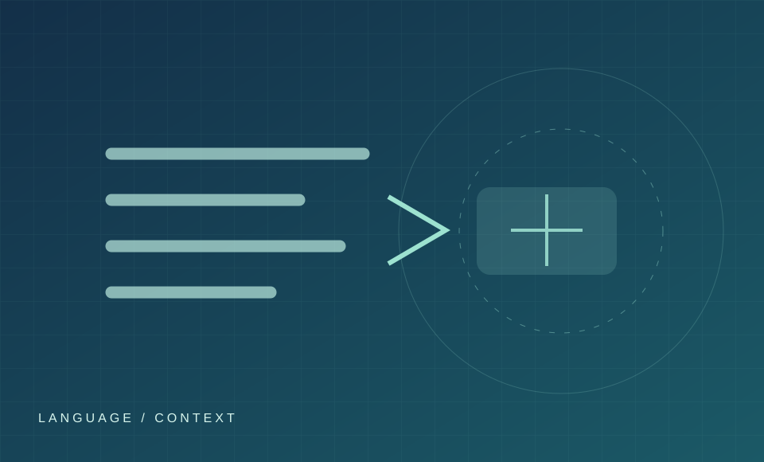

PROJECT 01 / NATURAL LANGUAGE PROCESSING
반어 표현 탐지 NLP
문장의 표면적 표현과 실제 의미가 어긋나는 반어를 AI가 어떻게 해석할 수 있을지 검토하는 프로젝트 후보입니다.
상태 확인 필요자연어처리텍스트 분류 방향

01 / BACKGROUND
문제 배경
반어는 문장의 문자 그대로의 의미와 의도된 의미가 다를 수 있습니다. 이 차이를 다루는 자연어처리 문제를 연구 주제로 검토하고 있습니다.
02 / OBJECTIVE
검토할 목표
반어 표현 탐지의 문제 정의, 데이터 조건, 평가 기준을 구체화하는 것이 다음 단계입니다. 현재 확인된 정량 목표나 성능 결과는 없습니다.
03 / METHODOLOGY
방법 설계
- 사용 데이터와 라벨 기준: [실제 데이터 확보 후 입력]
- 비교할 모델 또는 기준선: [실험 설계 후 입력]
- 평가 지표와 오류 분석: [평가 계획 확정 후 입력]
04 / RESULTS & CONTRIBUTION
결과와 본인 기여
실험 결과와 수행 역할은 확인된 내용이 없어 비워 둡니다. 데이터 구축, 모델링, 평가 등 실제 담당 작업이 확인되면 근거 자료와 함께 기록합니다.
05 / NEXT STEP
다음에 확인할 것
연구 범위와 실제 진행 상태를 확인하고, 사용 자료의 출처와 실험 과정을 정리합니다.